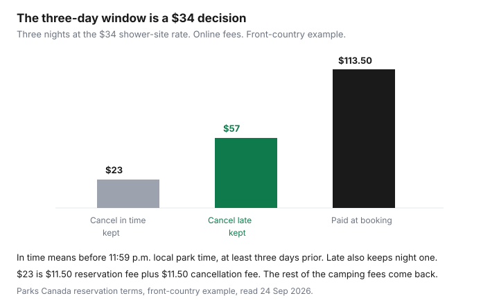

Travel · Canada
How to Book Parks Canada Campsites Without Losing the Reservation Race
Popular Parks Canada front-country sites do not ease into summer. On launch morning the season opens at once, a queue assigns a random place, and the loops families want can be gone before the coffee is finished. The households who still camp are the ones who knew the morning, had an account, and had a second park ready. This is that method. It is not a second copy of the Banff itinerary, and it is not the Discovery Pass break-even.
Disclosure: There is no natural affiliate product in a campsite reservation. Saving Optimizer does not claim a Parks Canada partnership. Fees were read from Parks Canada’s reservation terms and Banff fee and camping pages on 24 Sep 2026. The Canada Strong Pass camping discount ended 7 Sep 2026. Education only.
Key takeaways
- The 2026 launch mornings have already happened (January and February 2026, by park). For the rest of this season, hunt cancellations and shoulder dates. For next season, set the reminder when Parks Canada posts the calendar, not on the morning itself.
- Launch day opens the whole season for that place, generally 8:00 local time (8:30 in Newfoundland and Labrador). A queue starts about 30 minutes ahead. Your place in line is not a reward for refreshing early. Once it is your turn you have a short window to finish. Create the account before that day.
- An online reservation fee is $11.50 per campsite per stay. By phone it is $13.50. The fee is non-refundable. It is not the camping fee.
- Cancel at least 3 days before arrival — before 11:59 p.m. local park time — and the worked example refunds the camping fees minus the original reservation fee and an $11.50 online cancellation fee ($13.50 by phone). Inside that window you also lose the first night.
- A Discovery Pass is admission. It does not pay the campsite, the reservation fee, firewood, or parking that has its own fee. The pass math is the other guide.
- Plan B is a provincial park on its own booking window, or a first-come loop such as Mosquito Creek or Waterfowl Lakes in Banff, plus a motel you can live with if both fail.
Know release calendars and set reminders for popular front-country sites
Parks Canada does not open every campground on one national morning. Each place has a launch day. In 2026 those days ran from January into February, at 8:00 a.m. local time, 8:30 a.m. in Newfoundland and Labrador. Banff’s busiest front-country loops, including Tunnel Mountain, Two Jack, Lake Louise, and Johnston Canyon, were on the later Banff morning (the reservation page listed a revised date of Thursday, 12 February 2026, 8:00 a.m. Mountain Time, with a queue). Other parks were earlier. The only habit that works is the park’s own row on the official calendar, not a rumour from last year.
On launch day the reservable season for that place opens together. About 30 minutes before the clock, visitors are sent to a waiting page. Parks Canada’s instructions say the order is assigned at random and is not a prize for who clicked first. People who arrive after the open join the back. When it is your turn, finish the booking. Have the arrival date, the length of stay, the equipment length, and a second choice of loop written down before you are in the queue. A household arguing about tent versus trailer inside the timer is how the site goes to the next person.
New reservation accounts are part of the preparation. Sign in, or create the account, on a quiet evening the week the calendar is posted. Do not create it at 7:58 a.m. The phone line, 1-877-737-3783, is the backup if the site fails, and it costs more: $13.50 instead of $11.50. It is not a secret inventory.
As of 24 Sep 2026 the launch mornings for the 2026 season are behind you. What remains is cancellations, shoulder inventory, and first-come sections. Set a reminder anyway for the day Parks Canada publishes next season’s calendar. The Banff week itself — shuttles, Lake Louise parking, groceries — stays in the Banff and Jasper guide. This page is only the reservation race.
Shoulder-season availability vs peak July–August competition
July and August are when the front-country loops with showers, power, and a short drive to town empty in minutes. Shoulder season is not a mood. It is the weeks the campground is open and the launch-day crowd has already booked the holiday weekends, leaving gaps.
Banff’s own 2026 operating dates, from the camping page read 24 Sep 2026, show how narrow “shoulder” is:
| Campground | 2026 pattern | What that means for a race |
|---|---|---|
| Tunnel Mountain Village I | 15 May to 5 Oct, unserviced | A real September option after Labour Day. Still popular. Do not assume October. |
| Johnston Canyon | 21 May to 14 Sep, unserviced | Closes mid-September. Late September is a different campground. |
| Lake Louise soft-sided | 29 May to 23 Sep | Shoulder exists in June and again in September until the 23rd. The hard-sided loop is a different, year-round product. |
| Two Jack Main | 18 Jun to 7 Sep | This one is the peak window. It is a poor “September backup.” |
| Mosquito Creek, Waterfowl Lakes | First come, first served inside their operating dates | Not a reservation-race site. Arrive with a plan if the sign says full. |
Regular camping fees apply again from 8 Sep 2026, after the Canada Strong Pass discount ended on 7 Sep 2026. A memory of a cheaper summer is not the rate on an autumn site. Banff examples on the fee page that day: unserviced with toilets only $26.75, toilets and showers $34.00, electrical $40.00, full hook-up at Tunnel Mountain $47.25. Primitive sites such as Mosquito Creek are $22.00. Those are per night, taxes included in Parks Canada’s fee notes, and they are not the reservation fee.
If your only week is the last week of July because of school, stop shopping for a shoulder fantasy. Book that week, or book a provincial backup, on purpose. The shoulder-month guide is about trip type. It does not create a campsite.
One-night seeds and flexible itineraries that unlock longer stays
A four-night block in one popular loop is the search that fails. A one-night opening is often still there, and Parks Canada’s reservation instructions tell you what to do when the nights do not line up on one site: split the stay across sites. The tool has a path for that. Use it. Two sites inside the same park, with a move on the afternoon between them, is a trip. Zero sites is a motel.
A one-night seed is also a placeholder you can try to grow. If a neighbouring night is cancelled later, change the reservation and pay the difference in the stay plus the change fee, if you are still outside the penalty window in the last section. Watch the site calendar. Availability notices are a race of their own: the instructions say a site is held only when the reservation is complete, and other people can be looking at the same opening.
Flexible means the arrival park can move, not that you will “see how you feel on Tuesday.” Write two itineraries before launch day or before you refresh a cancellation: the one you want, and the one you will accept. A household that will only sleep at Lake Louise should say so and book the moment that loop has a night, or plan the motel. Pretending to be flexible inside the queue is how you leave with nothing.
What Discovery Pass does not cover at the campsite booth
The Discovery Pass is 12 months of admission at participating Parks Canada places. At the campground kiosk it does not pay for any of the following:
- The campsite. Front-country, backcountry overnight, and roofed stays are separate fees. A pass plus a site is two purchases.
- The reservation fee. $11.50 online or $13.50 by phone, per campsite per stay, non-refundable, on top of the nightly rate.
- Firewood, guided programs, and hot springs that charge their own admission.
- Parking that normally has its own fee. Lake Louise lakeshore parking is the example already priced on the Banff guide. It is not included in admission or in the pass.
Adult daily admission at Banff’s regular rate from 8 Sep 2026 is $12.25 and the adult pass is $83.50. Whether the pass wins is a gate-day count, worked in full on the Discovery Pass guide. Do not redo it while you are trying to hold a campsite. If you drive in once and stay inside the park, you may be paying one entry, not one per night. Count entries, then count nights, then add the reservation fee to the nights.
Backup provincial parks and first-come sections as Plan B
Provincial parks do not honour a Parks Canada booking, and Parks Canada does not honour a provincial pass. The backup is a second reservation system, started before you need it.
- Ontario Parks. The road-trip guide’s 2026 fee anchor, for 1 Apr 2026 through 31 Mar 2027, is fee-level AA regular non-electrical at $46.50 plus HST. That is a different product and a higher nightly number than a Banff unserviced site. It is still a place to sleep if the national loop is gone.
- BC Parks. The reservation transaction fee is $6 per site per night, capped at $18 per site, plus tax. Stays that begin on or after 15 May 2026 add a $20 camping fee for visitors who do not live in B.C. A non-resident of the province is not the same thing as a non-resident of Canada.
- Alberta Parks. The same road-trip sheet notes a 90-day booking window. That window is why an Alberta provincial site can still be open after a Parks Canada launch morning has emptied the national loops. It is also why you cannot book it in January for August.
First-come sections are Plan B only if you can arrive when the loop still has a site and you can leave if it does not. Mosquito Creek and Waterfowl Lakes in Banff are first-come inside their seasons. They are not a secret inventory of reservable sites. Pair them with a refundable motel on the arrival night so a full sign does not become an unplanned roadside stop. The fuel and the motel method sit on the road-trip budget.
Cancellation windows and change fees that protect your deposit
Front-country rules, from Parks Canada’s reservation terms read 24 Sep 2026:
- You pay camping fees and the reservation fee when you book. The reservation fee is non-refundable.
- A change stays inside the same offer. You cannot turn a campsite into an oTENTik on the same reservation. That is a new booking.
- Changes made up to 3 days before arrival are the difference in the value of the stay, plus a non-refundable change fee per transaction. Delaying your arrival inside 3 days also costs the first night. Changing site or departure, up until 11 a.m. the day after the scheduled arrival, is the value difference plus the change fee.
- The name on the permit can be changed before you arrive, at no charge. Reservations cannot be resold. A resold booking is void.
- Cancel at least 3 days before arrival and you are refunded less the original reservation fee and the cancellation fee. The worked example: arrive 10 July, cancel before 7 July at 11:59 p.m. local park time. Online, both the reservation fee and the cancellation fee in that example are $11.50. By phone, both are $13.50.
- Cancel on the later days, but before 11 a.m. the day after the scheduled arrival, and you also forfeit the first night’s camping fees.
The terms also show a change-fee example priced at $11.50 online and $13.50 by phone, in a section whose deadline is about a month out, not three days. That is a different offer’s clock. Use the three-day front-country rule for a standard campsite, and read the fee on the offer you actually hold before you click. Group camping and backcountry are not this paragraph.

On a three-night stay at $34, camping is $102 plus the $11.50 fee, $113.50 at booking. Cancel in time and the example keeps $23 ($11.50 plus $11.50) and returns the camping fees. Cancel late and it also keeps the first night: $23 plus $34 = $57, and returns the other nights. That $34 is the price of waiting. If the trip is uncertain, book the nights you will use and cancel before the window, or book a provincial site whose own rules you have read. Do not hold a July loop “just in case” through the final weekend.
Sources & date stamps
- Parks Canada reservation service and instructions — launch queues, split stays, 2026 Banff front-country launch listed as 12 Feb 2026, 8:00 a.m. MT. Read 24 Sep 2026.
- Parks Canada reservation terms — online reservation fee $11.50 and phone $13.50, non-refundable, per campsite per stay; front-country cancel and change windows; July 10 cancellation example. Read 24 Sep 2026.
- Parks Canada Banff fees and camping pages — nightly rates and 2026 operating dates; regular fees from 8 Sep 2026 after the Canada Strong Pass ended 7 Sep 2026. Read 24 Sep 2026.
- Provincial fee anchors (Ontario Parks AA, BC Parks transaction fee and 15 May 2026 non-resident fee, Alberta 90-day window) as already dated on this site’s road-trip guide. Re-read the provincial page you will book.
Frequently asked questions
When do Parks Canada campsites go on sale?
Each place has its own launch day. For the 2026 season those mornings were in January and February, generally 8:00 a.m. local time and 8:30 a.m. in Newfoundland and Labrador. The whole season for that place opens together. As of 24 Sep 2026 those launches have passed. Use cancellations and shoulder dates now, and set a reminder when next season’s calendar is posted.
What does it cost to reserve, change, or cancel?
The online reservation fee is $11.50 per campsite per stay, or $13.50 by phone, and it is non-refundable. Cancel at least three days before arrival and the worked front-country example also charges an $11.50 online cancellation fee and refunds the camping fees. Inside three days you also lose the first night. Changes add a non-refundable change fee; confirm that dollar amount on the offer you booked.
Does a Discovery Pass include the campsite?
No. The pass is admission. Camping, the reservation fee, firewood, hot springs, and parking that has its own fee are extra. Whether the pass beats daily admission is the Discovery Pass guide, not this one.
What if the national campground is full?
Book a provincial park on its own system, or use a first-come loop such as Mosquito Creek or Waterfowl Lakes and keep a motel you can cancel. Ontario, B.C., and Alberta fees and windows are not Parks Canada fees. A one-night seed plus a split stay is the other way through a full loop.